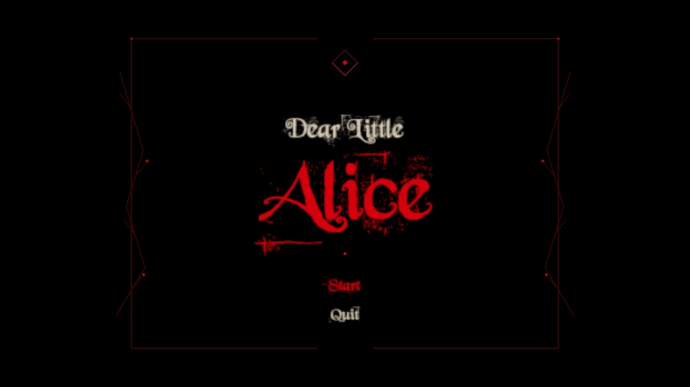

USC / Traveller · First-person exploration
Dear Little Alice
A small doorway. A changing sense of scale. An exit that asks you to look again.

Overview
A surreal first-person exploration game that uses scale, navigation, and shifting environmental meaning. An uncanny forest leads toward a small doorway; shrinking changes what the player can access and how the surrounding space feels.
My contribution
- Developed the forest-to-maze exploration sequence and the change of scale at the doorway.
- Iterated on environmental guidance, route access, and the readability of the drink interaction.
- Connected the false exit, paper mechanism, and storybook reveal into a continuous ending.
Scale changes access
The player first encounters the maze doorway at normal size, then finds a bottle nearby. Shrinking happens in place, letting the same physical entrance become a route the player can pass through.
Guidance that can be questioned
The forest offers familiar visual cues alongside another route. After a loop, new cues appear while the earlier route remains visible, encouraging the player to reconsider what they have been following.
A closer look
Project gallery
Explore the images below. Select an image to enlarge it and read the details.